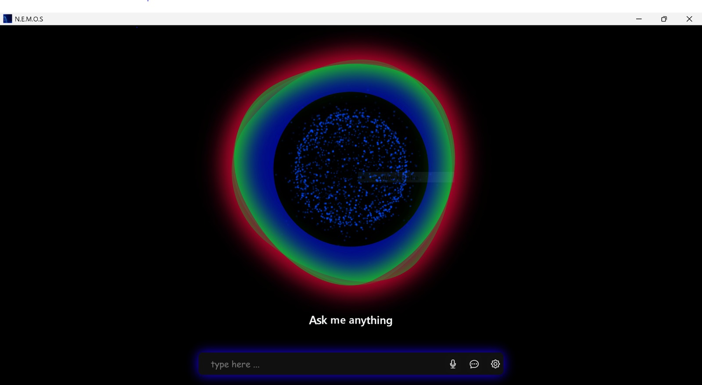

NLP · Automatisation
N.E.M.O.S – Assistant IA
Assistant vocal et chatbot intelligent combinant traitement du langage naturel, scripts Python et intégration d'APIs pour automatiser des tâches et répondre aux utilisateurs.
Python
NLP
APIs
Découvrir le projet